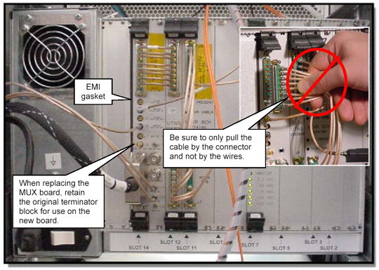

Illustration 3: Removing Coaxial Cables

| NOTE: | It has been reported that a damaged EMI gasket on the RRF Chassis
(slot 14) can cause low SNR on multicoil channels. Early MUX boards have long
connector pins that protrude through the circuit board and can shred the gasket
as the board is being removed or installed. Manufacturing is now checking
the seating of the EMI gasket and trimming excess length from the connector
pins, but does not recommend trimming excess length from early-release MUX
boards in the field. Exercise care when removing the MUX board from early System Cabinets: loosen the mounting screws, eject it from slots 13/14 and then slide the board forward enough to permit access to the gasket. Confirm that the gasket is seated snugly against the left side of slot 14. Remove the board carefully to ensure that there is enough clearance so that the pins protruding through the board don’t damage the EMI gasket. |